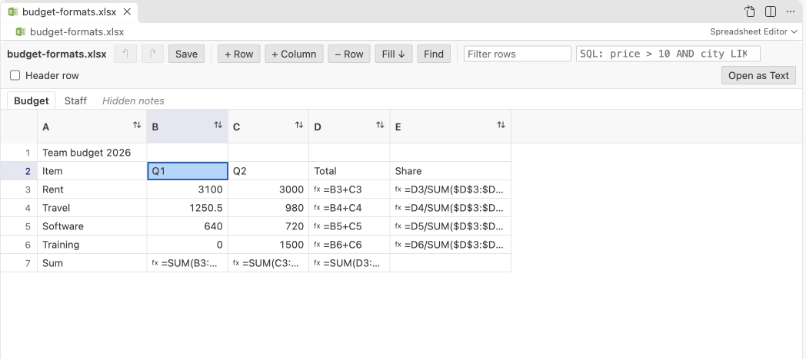

Open files in VS Code and Cursor / Office files
Edit an .xlsx file without Excel
Spreadsheet Editor opens an .xlsx workbook in VS Code as an editable grid with a tab per sheet. You change values and rows, and the save keeps formulas, styles, number formats, merged cells, column widths and the other sheets. Pivot tables, charts and macros cannot be kept, and a note lists them before the first save. Editing is free for workbooks up to 40 MB. Zovo Pro (USD 19 once) opens workbooks up to 200 MB for editing, with 3 free tries.
Free, MIT license. Extension ID zovo.zovo-spreadsheet-editor, version 0.1.1. Needs VS Code 1.90.0 or newer.
Also free from Zovo: XLSX, Excel, CSV & Parquet Viewer, VS Code Marketplace · Open VSX (Cursor, Windsurf).

Steps in VS Code
- Install Spreadsheet Editor from the Marketplace, or press Ctrl+P (Cmd+P on macOS) and run
ext install zovo.zovo-spreadsheet-editor. - Click the
.xlsxor.xlsmfile in the Explorer. It opens in Spreadsheet Editor, with one tab per sheet. If another viewer opens it, right-click the file and pick "Open in Spreadsheet Editor". - Click a cell and type. Enter moves down and Tab moves right. F2 edits the text that is there, and Alt+Enter adds a line break in a cell. Text that starts with = becomes a formula.
- Right-click a row number or a column header to insert, delete or move rows and columns. A block copied from Excel or Google Sheets pastes into the grid.
- Press Ctrl+S (Cmd+S on a Mac). Before the first save of a workbook with formulas or with parts that cannot be kept, a note says what is kept and offers the buttons Save and "Save a Copy...".
- Open the file in Excel or LibreOffice. The formulas are calculated again when the file opens.
Where Zovo Pro saves time
Editing, undo and redo, find and replace with regex and whole cell, the Filter rows box, the SQL box, sort, column stats and saving are free, with no limit on edits or saves. Workbooks up to 40 MB and 5,000,000 cells open for editing. Numbers stay numbers and dates in date cells stay dates when you save.
A workbook over 40 MB does not open for editing without Pro. This Pro tool opens workbooks up to 200 MB and CSV files up to 2,000 MB for editing, so a big export can be fixed in place. The other Pro tools in Spreadsheet Editor are Find and Replace in CSV Files, across the whole workspace, and Save Filtered Rows as a New File, which writes the rows you filtered to a new CSV, TSV or XLSX file.
With Edit files past the free size limits (Zovo Pro)
- Click the large workbook. A note says it is over the free limit and has the button "Open for editing with Zovo Pro", with the free tries left.
- Click it. The workbook opens for editing. A try counts only when the file opened.
- After the 3 tries, the button offers Zovo Pro.
Edit files past the free size limits works 3 times on your computer before it asks for a license, and a try counts only when you get a result. Opening a file shows no popup and no countdown.
Zovo Pro costs USD 19 once. It is not a subscription, and it turns on the Pro tools in every Zovo extension, not only Spreadsheet Editor. After a card payment (Stripe) your license key shows on the next page. In VS Code, run "Zovo Pro: Enter Zovo Pro license key" from the Command Palette and paste it. The key is checked on your computer, with no network call. With GitHub Sponsors, pick the "$19 one time" tier, then run "Zovo Pro: I already paid: unlock with GitHub Sponsors" and sign in with the same GitHub account. With PayPal, send USD 19 with "Zovo Pro" in the note and the key comes by email within a day.
A team of 5: USD 59 once, by card or by PayPal. Every rule and every Pro tool is on the Zovo Pro page.
Steps in Cursor, Windsurf or VSCodium
- Open the Extensions view with Ctrl+Shift+X (Cmd+Shift+X on macOS).
- Search for
zovo.zovo-spreadsheet-editorand click Install. Cursor, Windsurf and VSCodium install from Open VSX, where it is published aszovo/zovo-spreadsheet-editor. - If your editor has no gallery, download the .vsix from the Open VSX page and run "Extensions: Install from VSIX...".
- Then use it the same way as in VS Code.
What Spreadsheet Editor handles
.xlsxworkbooks, and.xlsmworkbooks, whose edits are saved to a new .xlsx copy.- Formulas, styles, number formats, merged cells, column widths and hidden sheets, kept on save.
- Cell types on save. Numbers stay numbers, and dates in date cells stay dates.
- Undo and redo before and after a save, with VS Code's own Revert and hot exit.
What it does not do
- Pivot tables, charts, shapes, slicers, macros, threaded comments and links to other workbooks are not kept. Save a Copy keeps the original as it was.
- Spreadsheet Editor does not calculate formulas. Excel calculates them again when it opens the file.
- Only
.xlsxand.xlsm. It does not edit.xls,.xlsbor.odsfiles. - Free editing stops at 40 MB per workbook and 5,000,000 cells over all sheets.
Other options
- LibreOffice Calc. A free desktop spreadsheet that edits .xlsx files and calculates formulas. Some Excel features change on the way back.
- Excel for the web. Free with a Microsoft account. The file has to be in OneDrive or SharePoint.
- openpyxl. A Python library that changes cells from a script and keeps formulas. It drops charts and images it cannot read.
Install counts and Open VSX status were checked on 13 November 2026. Descriptions in quotes are the extensions' own.
Questions
Will my formulas still work?
Yes. Formulas are saved as formulas. The results Excel saved stay until Excel or LibreOffice calculates them again when it opens the file.
What happens to a macro workbook?
An .xlsm file is never written in place. Your edits go to a new .xlsx copy, and the .xlsm file and its macros stay as they were.
Can I see the workbook without risk of changing it?
Yes. Nothing is written until you save, and closing asks first. For a read-only look, Table Viewer from the same publisher shows workbooks with their number formats.
Does it work in Cursor or Windsurf?
Yes. Cursor, Windsurf and VSCodium install extensions from Open VSX. Search for the extension in their Extensions view and install it there.
More about Spreadsheet Editor
Read the Spreadsheet Editor page for every feature and setting, or the source code on GitHub.
Related guides
- XLSX, Excel, CSV & Parquet Viewer on the VS Code Marketplace (also on Open VSX). Opens xlsx, xls, csv and parquet files as a sortable table with SQL filters.
- Edit CSV files in VS Code as a spreadsheet
- Find and replace across all CSV files in a workspace
- Edit a CSV file that is too big for Excel
- Fix a CSV that opens in one column or with broken characters
Zovo Pro and support
Zovo Pro: USD 19 once, every Zovo viewer. It turns on the Pro tools in this extension and in the other Zovo extensions you use. The free features stay free.
After a card payment your license key shows on the next page. Paste it with the command "Zovo Pro: Enter a key".
You can also support the work with no Pro:
Need your format supported?
Open a format request with a sample file, and I reply there whether it can be done. For USD 299 once, through this GitHub Sponsors tier, I add your file format or a missing feature to this extension, with tests, within 7 days.